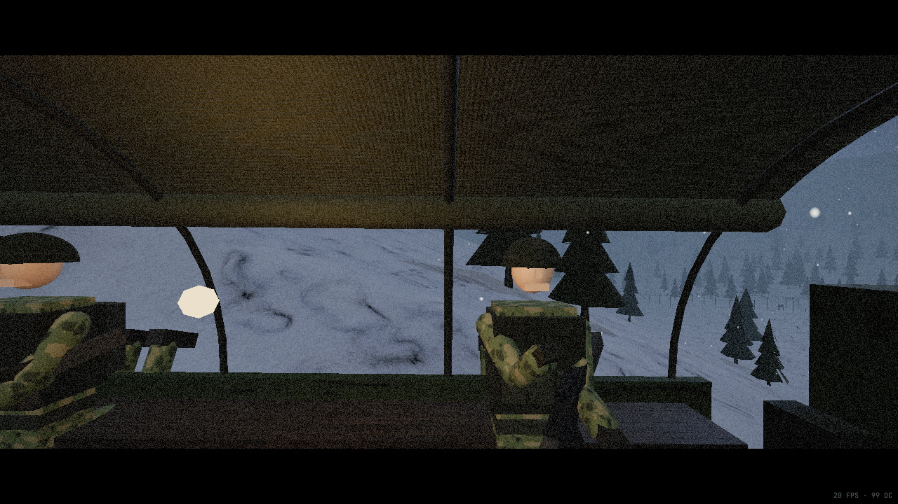
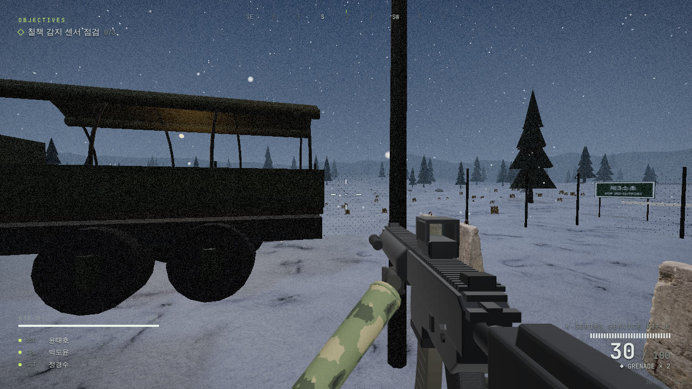
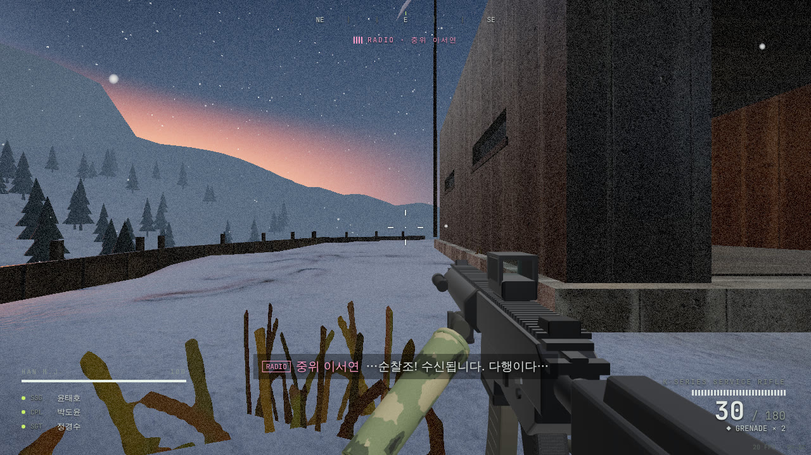
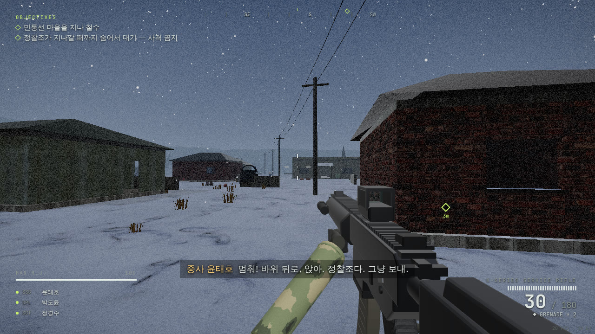
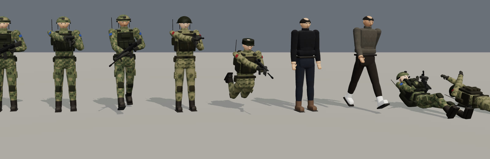
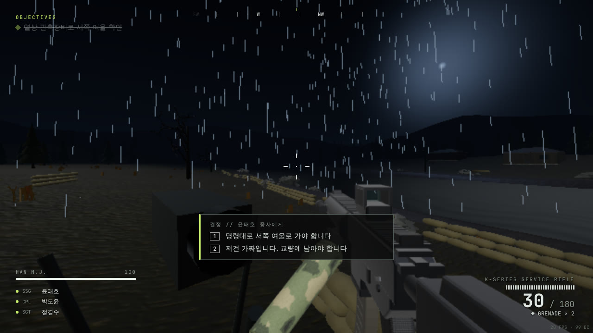
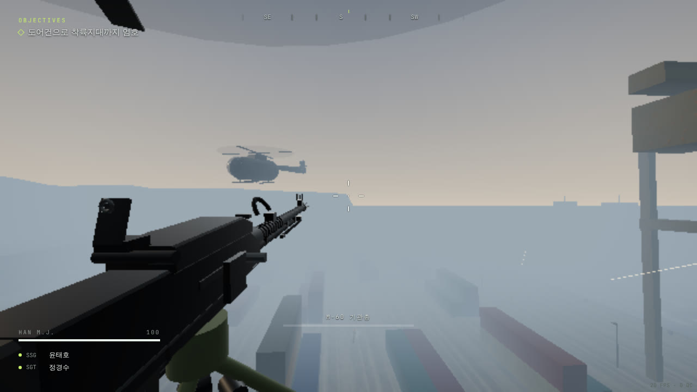
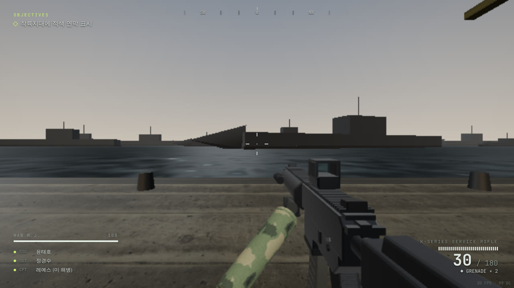

SINGLE-PLAYER MODERN MILITARY FPS · 1인칭 현대전 FPS
FRONTLINE — IRON ECHO
2029년, 한반도 전면전. 신병 한민재의 한국 전선과, 지워진 전직 요원 다니엘 보스의 해외 추적이 하나의 거짓말로 이어지는 16개 미션 캠페인. 브라우저에서 바로 실행되는 3D 게임입니다(three.js · WebGL 2).
이 페이지는 게임 소개입니다. 게임 자체는 JavaScript와 WebGL 2가 켜진 데스크톱 브라우저(Chrome · Edge · Firefox)에서 이 주소를 열면 실행됩니다. 텍스트만 읽는 도구나 자동 브라우저에서는 3D 게임 화면이 렌더링되지 않으므로 아래 정보·스크린샷·소스 코드로 확인할 수 있습니다.
소스 코드 (GitHub) · 캠페인 시나리오 · 스토리 바이블 · 개발 현황
현재 상태 (빌드 0.3.0)
- 플레이 가능 (16개 중 7개): Mission 01 ROUTINE PATROL, Mission 02 BLACKOUT, Mission 03 FALLING FRONT, Mission 04 THE CROSSING (ACT 1 전체), Mission 05 OFF THE GRID (파리), Mission 06 NIGHT MARKET (뭄바이), Mission 07 CLOSE QUARTERS (뉴욕) (ACT 2, 다니엘 보스 시점) — 각각 처음부터 끝까지 진행 가능, 미션 완료 후 메뉴를 거치지 않고 다음 작전으로 이어짐
- 분기 선택: M05부터 플레이어의 선택이 진행 방식과 다음에 주어지는 선택지를 바꾸고, 이후 미션으로 이어지는 기록(storyFlags)으로 저장됨
- 설계 완료·제작 예정: Mission 08–16 (시나리오와 미션별 이벤트 계획 문서화)
- 개발 중: 미션과 별개로 자유롭게 돌아다니는 서울 대도시 — 옛 도심, 중앙역과 랜드마크 타워가 있는 신도심, 약 0.6㎢의 하늘길 지구(상업 거리·하늘 광장·하늘숲길과 작은 광장·보행로·빌라 골목), 걸어 들어갈 수 있는 가게 내부, 한국식 간판
- 메인 메뉴 · 임무 선택 · 영화식 브리핑 · 그래픽/오디오/조작 설정(키 변경, 게임패드) · 체크포인트 저장/이어하기 · 일시정지 · 결과 화면 · 크레딧
스크린샷















플레이 가능한 미션
MISSION 01 — ROUTINE PATROL (일상 순찰)
2029년 3월 14일 04:52, 강원도 중부전선 GOP. 오경보가 잦은 철책 감지 센서를 점검하는 평범한 새벽 순찰이 정전과 교신 두절, 지평선의 섬광으로 무너진다.
이벤트: 트럭 탑승 진입 · 센서 점검 · 정전 · 포격 속 교통호 이동 · 감시탑 붕괴 · 관측소 침투조 교전 · 무전 복구 · 거치 기관총 방어 · 쌍안경 박격포 유도 · 적 정찰조를 숨어서 지나보내기 · 매복 속 부상병 끌기 · 장갑차 포탑 사수로 적 기관총 트럭 격파 · 헬기 편대 엔딩
MISSION 02 — BLACKOUT (블랙아웃)
같은 날 09:30, 전력과 통신이 끊긴 주인공의 고향 연서시. 지하철 역사에 갇힌 시민들을 구출해 대피 버스로 호송한다.
이벤트: 차량 밀어 도로 개척 · 자폭 드론 떼를 휴대용 재밍건으로 무력화 · 관측 드론(발각되면 포격) · 도로 위 적 특수부대 · 손전등을 켜고 들어가는 어두운 역사 · 셔터 개방 · 150초 시한 폭약 해체 · 시민 8명 인솔 · 트럭 기관총으로 버스 호송(버스 내구도) · 고가도로 붕괴
MISSION 03 — FALLING FRONT (무너지는 전선)
다음 날 새벽 02:10, 비 내리는 한탄강 방어선. 출처를 알 수 없는 명령이 예비대를 빼 가고, 열상 장비에 찍힌 전차들은 한순간에 사라진다. 진짜 공격은 교량 정면으로 온다.
이벤트: 야간 트럭 이동 · 열상 관측장비와 사라지는 기만 전차 · 분대장에게 하는 선택(대사 분기) · 조명탄 아래 고무보트 도하 저지 · 거치 기관총 · 쌍안경 박격포 지원 · 사격 속 교량 폭약 설치 · 적 전차와 중앙 경간 폭파 · 전선 붕괴와 부상병 후송 엄호
MISSION 04 — THE CROSSING (도하)
03월 18일 새벽, 짙은 해무 속 서해 3부두. 개전 후 첫 한미 연합 반격. 미 해병 중대와 함께 헬기로 강습한다.
이벤트: 헬기 도어건 사격(RPG 피격) · 미 해병과 공동 작전 · 해안 포대 3곳 폭파 · 쌍안경 함포 지원 · 장갑차 포탑으로 절벽 진입로 하강 · 크레인 관제실 탈환 · 크레인 카메라로 적 트럭에 컨테이너 투하 · 적색 연막 착륙지대 75초 사수 · 해무가 걷히며 드러나는 연합 함대
MISSION 05 — OFF THE GRID (오프 더 그리드)
03월 16일 밤, 비 내리는 파리. 지워진 전직 요원 다니엘 보스가 옛 조직의 추적을 피해 5년 전 작전의 원본 기록을 찾는다.
이벤트: 쇼윈도 유리의 실시간 반사로 미행자 찾기 · 메트로 군중 속 은밀 이동과 열차 탑승 또는 통로 매복과 뒤에서 제압 · 환기구/출입 코드/강행/정전 중 진입 방법 선택 · 지하 기록 보관소 은밀 침투 · 드라이브 업로드 사수 또는 추격 탈출 · 옛 동료 브레넌의 무전. 선택에 따라 진행과 다음 선택지, 에필로그가 달라짐.
MISSION 06 — NIGHT MARKET (야시장)
03월 19일 23:40, 습한 밤의 뭄바이 항구 야시장. 다니엘은 파리에서 찾은 비행 기록을 따라와 부두 창고의 비밀 경매를 지켜본다. 그곳에서 나디아 라만과 처음 마주친다.
이벤트: 노점과 네온 사이 시장 통과 · 부두가 보이는 옥상 확보 · 경매 관찰(마지막에 손을 드는 낙찰자 찾기) · 경매장 습격과 운반책 추적 · 전원이 끊긴 서쪽 창고 교전 · 나디아와의 대치(파리에서의 선택에 따라 선택지가 달라짐)
MISSION 07 — CLOSE QUARTERS (근접전)
03월 21일 18:05, 진눈깨비 내리는 뉴욕. 마야가 애비뉴의 카페에서 납치되고, 그녀의 전화는 애셔 타워 32층에서 응답한다.
이벤트: 로비 돌파 · 32층 층별 제압과 서버실(복사 또는 삭제) · 창밖 헬기 공격으로 무너지는 유리 커튼월 · 화물 엘리베이터 지붕을 타고 샤프트 하강 · 지하철 터널 작업차 추격(운전하며 사격) · 폐역 홀리스 스트리트 인질 대치
게임 시스템
- 1인칭: 걷기·달리기·앉기·점프·장애물 넘기, 조준(홀로 사이트), 재장전 애니메이션, 무기 교체, 수류탄, 손전등, 쌍안경, 차량 좌석·포탑·거치 화기
- AI: 시야·청각 인지, 엄폐 지점 점수화, 숨기/노출 사격 사이클, 측면 우회, 수류탄, 분대 경보 전파, 난이도별 동시 사격 제한, 함께 싸우는 분대원, 총성에 웅크리는 시민
- 적 유형: 보병, 특수부대, 민간 군사업체 경비, 기관총 트럭, 전차, 고무보트, 정찰 드론, 자폭 드론, 원거리 적 거점
- 연출: 우선순위 대사·무전·자막(외국어 대사는 [영어] 등 표시), 레터박스, 타이틀 카드, 교량·건물·차량 파괴(파편·철근·물보라), 여명 변화, 날씨(눈·비·해무)
- 사운드: 총성·폭발·재장전·발소리는 실제 녹음 효과음(OpenGameArt CC0/CC-BY)을 거리·방향·실내 잔향에 맞춰 재생, 차량·무전·환경음·적응형 음악은 Web Audio로 실시간 합성, 메뉴 테마곡
- 그래픽: PBR 재질, 그림자, 블룸·필름 그레인·색보정, 파티클(연기·화염·파편), Poly Haven CC0 실사 텍스처·스캔 소품
조작
WASD 이동 · 마우스 시점 · Shift 달리기 · C 앉기 · Space 점프/넘기 · 좌클릭 사격 · 우클릭 조준 · R 재장전 · F 상호작용(길게 누르기) · G 수류탄 · 1/2 무기 · B 쌍안경(화력 지원) · L 손전등 · Esc 일시정지. 게임패드 지원, 모든 키 변경 가능.
기술과 한계
three.js r187(WebGL 2) + Vite. 사람 캐릭터는 Quaternius CC0 인체·애니메이션 라이브러리에 코드로 군복·장구류를 입힌 것이고, 소총·권총·조준기·방탄모·방탄복·트럭·헬기·함정은 Sketchfab CC-BY 등 라이선스 모델(출처는 assets/CREDITS.md), K21 장갑차는 직접 제작한 원본 모델이며, 총성·폭발·재장전·발소리는 OpenGameArt의 CC0/CC-BY 녹음입니다. 대사는 자막(외국어는 [영어] 표시)과 합성음으로 전달하며 실제 성우 녹음은 없습니다. 얼굴 표정·옷 주름 표현은 제한적이고 차량은 직접 운전할 수 없습니다. 자동 테스트는 소프트웨어 렌더링(SwiftShader)에서 실행되며, 실제 GPU별 성능은 아직 검증 전입니다. 모든 인물·부대·사건은 허구이며, 전투는 비고어 방식으로 표현됩니다.
English summary
FRONTLINE — IRON ECHO is a single-player first-person modern military shooter that runs in the browser (three.js / WebGL 2). Set in a fictional 2029 war on the Korean peninsula, it follows conscript Han Min-jae on the Korean front and ex-operative Daniel Voss abroad across a 16-mission campaign. Missions 01–07 are playable and chain into each other (Korean front, then Paris, Mumbai and New York); missions 08–16 are designed. A free-roam Seoul city map is in development. Gameplay mixes infantry combat with mounted machine guns, an IFV turret section, binocular-directed mortar strikes, recon and kamikaze drones, a stealth beat, a timed bomb defusal in a dark subway station, civilian escort, a bus escort and scripted collapses. To play, open this page with JavaScript and WebGL 2 enabled in a desktop browser.